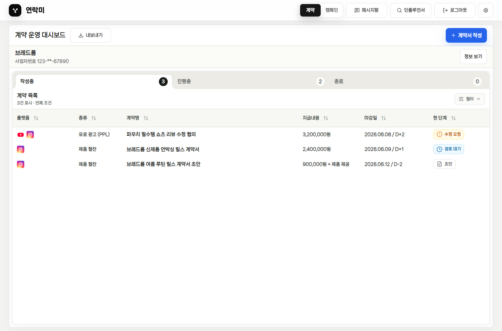
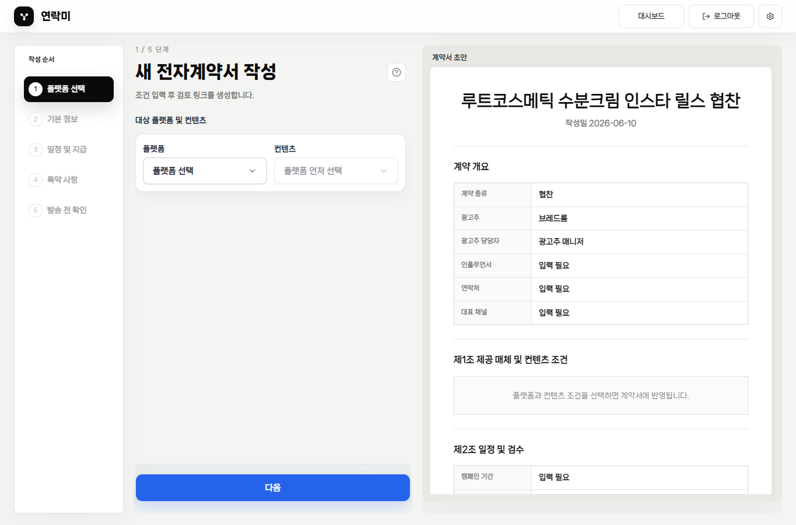
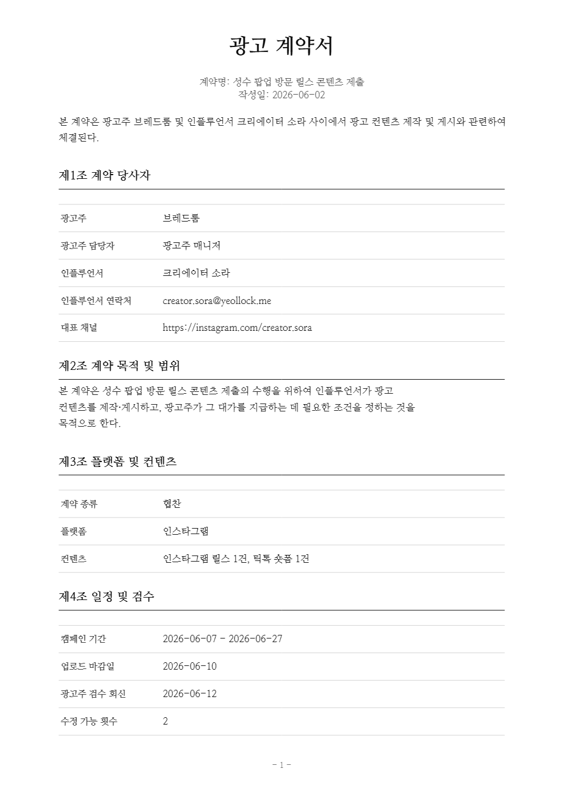

Y연락미
광고주 실무자 소개서
광고 협업을
계약과 운영 기준으로
정리합니다.
인플루언서 협업에서 조건, 검토, 서명, 제출, 보고까지 흩어지는 일을 한 흐름으로 묶는 광고주 운영 도구입니다.
계약 작성
수정 기록
상태 관리
보고 내보내기

Y연락미
왜 필요한가
광고 협업의 리스크는 대부분 ‘기록이 흩어지는 순간’ 생깁니다.
메일, 메신저, 시트, PDF가 따로 움직이면 조건 확인과 책임 소재가 늦어집니다. 연락미는 실무자가 매일 확인해야 하는 상태와 다음 액션을 한 곳에 남깁니다.
조건 누락플랫폼, 컨텐츠 형태, 일정, 지급 조건이 대화 속에 섞이면 계약서 반영 여부를 다시 확인해야 합니다.
수정 이력 분산조항 수정 요청이 메신저에 남으면 누가 어떤 조건에 동의했는지 추적하기 어렵습니다.
보고 자료 재가공계약 현황을 내부 시트로 다시 옮기는 일이 반복되면 마감과 상태가 어긋납니다.
Y연락미
계약 작성
처음에는 하나의 플랫폼과 컨텐츠부터 시작합니다.
플랫폼을 먼저 고르고, 그 플랫폼에서 필요한 컨텐츠 형태를 선택합니다. 같은 플랫폼 안에서 컨텐츠를 추가하거나, 필요할 때 플랫폼을 더하는 방식이라 작성 흐름이 복잡해지지 않습니다.
1
플랫폼 선택Instagram, YouTube, Naver, TikTok 등 협업 채널을 먼저 정합니다.
2
컨텐츠 조건 입력릴스, 숏폼, 롱폼, 블로그 원고처럼 실제 산출 방식에 맞춰 조건을 남깁니다.
3
계약서 초안 자동 정리입력한 조건이 PDF 계약 문서 흐름 안에 반영됩니다.

Y연락미
계약서 확인
상대방에게 보여줄 문서는 실제 계약서 원문이어야 합니다.
요약 카드가 아니라 광고주가 작성한 계약 조건이 PDF 문서 형태로 정리됩니다. 검토, 공유, 서명 전 단계에서 같은 문서를 기준으로 확인합니다.
“조건이 바뀌었는지”보다 “어떤 문서에 동의했는지”가 먼저 보여야 합니다.계약 본문을 중심에 두면 실무자와 크리에이터가 같은 기준으로 대화할 수 있습니다.

Y연락미
상태 관리
대시보드는 오늘 처리할 계약을 보여주는 운영판입니다.
작성중, 진행중, 종료 상태를 나누고 수정 요청, 검토 대기, 서명 준비처럼 실제 다음 행동이 필요한 항목을 빠르게 찾습니다.
고정된 대시보드 공간계약이 적어도 표 영역은 유지됩니다. 비어 있는 공간은 운영 여백으로 남고, 필요한 CTA만 명확하게 보입니다.
Y연락미
캠페인 모집
캠페인 지원자는 바로 계약 흐름으로 연결됩니다.
지원자 목록에서 크리에이터 프로필과 채널 정보를 보고 선정합니다. 선정 이후에는 모집 조건을 기준으로 계약이 이어져 운영 흐름이 끊기지 않습니다.
1
지원자 확인사진, 이름, 인증 채널, 팔로워 규모를 한눈에 봅니다.
2
프로필 검토크리에이터의 공개 프로필과 채널을 확인합니다.
3
계약 생성선정한 지원자와 캠페인 조건을 계약으로 넘깁니다.

Y연락미
내부 보고
운영 현황은 엑셀이나 Google 스프레드시트로 내보낼 수 있습니다.
대시보드에서 내보내기를 누르면 파일 다운로드와 Google 스프레드시트 생성을 선택할 수 있습니다. 실무팀이 이미 쓰는 보고 방식으로 이어지게 하는 구조입니다.
XLSX바로 다운로드해서 내부 파일로 보관합니다.
Sheets사용자가 동의하면 Google Drive에 새 시트를 생성합니다.
Safe공유 토큰, 원본 서명, private storage 경로는 내보내지 않습니다.
내보내기
×엑셀 파일.xlsx로 바로 다운로드
Google 스프레드시트연결된 Google Drive에 새 시트 생성
Y연락미
운영 기준
연락미는 광고 협업을 ‘기억’이 아니라 ‘기록’으로 운영하게 합니다.
계약 조건을 구조화하고, 상대방 검토와 서명을 문서 기준으로 남기고, 대시보드와 시트로 내부 운영까지 연결합니다.
01조건 작성플랫폼, 컨텐츠, 일정, 지급 조건을 입력합니다.
02계약 확인PDF 문서 기준으로 검토하고 공유합니다.
03진행 관리수정, 서명, 제출, 종료 상태를 대시보드에서 봅니다.
04보고 연결엑셀 또는 Google 스프레드시트로 내보냅니다.
광고 협업을 반복 운영할수록 필요한 것은 더 많은 설명이 아니라 같은 기준의 기록입니다.yeollock.me